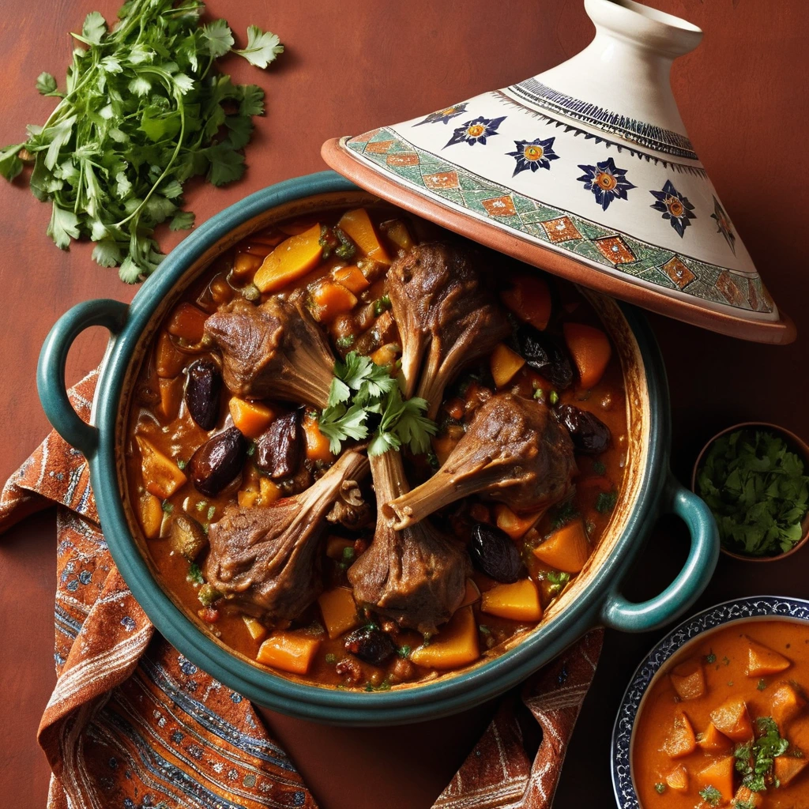

Moroccan Lamb Tagine

Description
This hearty and flavorful Moroccan Lamb Tagine is a delicious and
comforting dish. The tender lamb is slow-cooked with fragrant spices,
dried fruits, and vegetables, resulting in a rich and aromatic stew. It's
a perfect dish for a cozy dinner or a special occasion.
Ingredients
- 1.5 pounds lamb shoulder, cut into 1-inch cubes
- 2 tablespoons olive oil
- 1 large onion, finely chopped
- 4 cloves garlic, minced
- 1 teaspoon ground cumin
- 1 teaspoon ground coriander
- 1/2 teaspoon ground cinnamon
- 1/2 teaspoon ground ginger
- 1/4 teaspoon turmeric
- 1/2 teaspoon saffron threads, soaked in warm water
- 1 tablespoon sweet paprika
- 1/2 teaspoon salt
- 1/4 teaspoon black pepper
- 1 (28-ounce) can crushed tomatoes
- 1 cup water
- 1/4 cup pitted prunes
- 1/4 cup dried apricots
- 1 tablespoon honey
- 1/2 teaspoon lemon juice
- A handful of blanched almonds
Steps
-
Marinate the lamb: In a large bowl, combine the lamb
with the olive oil, cumin, coriander, cinnamon, ginger, turmeric,
saffron, paprika, salt, and pepper. Mix well to coat the lamb, then
cover and refrigerate for at least 1 hour, or overnight for even better
flavor.
-
Make the tagine: Heat the remaining olive oil in a
large tagine or Dutch oven over medium heat. Add the onion and garlic,
and cook until softened and translucent, about 5 minutes.
-
Add the lamb: Remove the lamb from the marinade and
shake off any excess liquid. Add the lamb to the tagine and brown on all
sides, about 5-7 minutes.
-
Add the sauce: Stir in the crushed tomatoes, water,
prunes, apricots, honey, and lemon juice. Bring to a boil, then reduce
heat to low, cover the tagine, and simmer for 1.5-2 hours, or until the
lamb is tender and falling off the bone.
-
Finish and serve: Remove the lid from the tagine and
uncover for the last 15 minutes of cooking to allow the sauce to thicken
slightly. Sprinkle with blanched almonds and serve immediately with
couscous or flatbread.